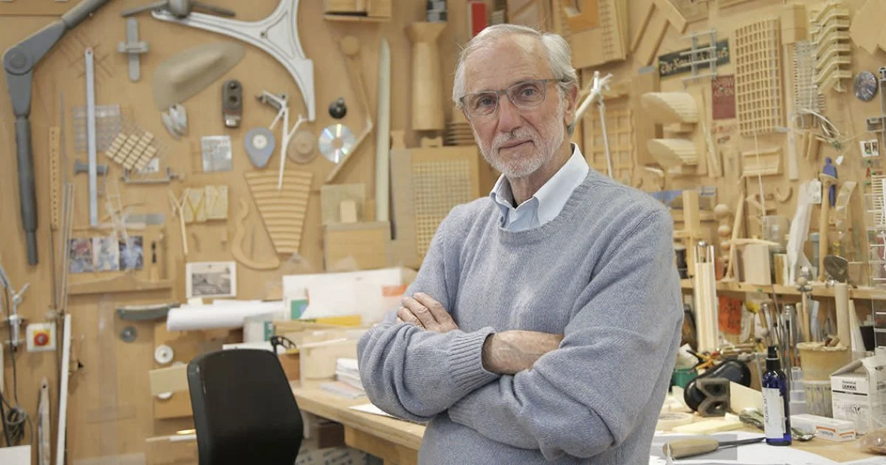

RENZO PIANO, ARCHITECTE DE GÉNIE
Renzo Piano, architecte italien de renommée mondiale, est reconnu pour sa vision avant-gardiste et sa contribution majeure à l'architecture contemporaine.
Découvrez ci-dessous son parcours artistique et son influence dans le monde.
PARCOURS
Renzo Piano est né dans une famille d'architectes en Italie. Après des études à l'École polytechnique de Milan, il a acquis une solide base en architecture et a travaillé aux côtés d'architectes influents, enrichissant ainsi son expérience.
Piano est reconnu pour son approche humaniste de l'architecture, mettant l'accent sur la fonctionnalité, la durabilité et l'interaction harmonieuse avec l'environnement. Des œuvres emblématiques telles que le Centre Georges Pompidou à Paris, caractérisé par son concept novateur d'exposer les éléments structurels à l'extérieur du bâtiment, illustrent son impact dans le monde de l'architecture.
L'héritage de Piano comprend également des projets axés sur la durabilité, tels que The Shard à Londres et le siège de la California Academy of Sciences à San Francisco. Ces réalisations intègrent des caractéristiques écologiques avancées, reflétant son engagement envers des pratiques architecturales respectueuses de l'environnement.

INFUENCE DE PIANO
Reno Piano a eu une influence significative dans le monde de l'architecture à plusieurs niveaux:
Sa vision avant-gardiste et ses conceptions novatrices ont redéfini les normes architecturales. L'exposition des éléments structurels à l'extérieur du Centre Georges Pompidou en est un exemple marquant, démontrant sa volonté de repousser les limites traditionnelles de l'architecture.
Ses œuvres iconiques, telles que The Shard à Londres, ont transformé les paysages urbains mondiaux, apportant une esthétique distinctive et influençant les silhouettes des villes.
L'accent mis par Piano sur la durabilité et les pratiques respectueuses de l'environnement a également eu un impact sur la manière dont l'architecture contemporaine intègre des éléments écologiques. Ses bâtiments intègrent souvent des caractéristiques écologiques avancées.
En créant des espaces comme des musées et des centres culturels, tels que le Centre Georges Pompidou ou la Fondation Beyeler, Piano a contribué à façonner des lieux où l'art, la culture et l'architecture se rencontrent pour inspirer et éduquer.
DÉCOUVRIR
Si l’article vous a plu, n’hésitez pas à visiter la galerie des œuvres de l’artiste !